4.2. 创建课程大纲¶
您主要是在edX Studio的课程大纲中创建课程。本章主要概述课程大纲的操作方法。
- `Open the Course Outline`_
- `Example of a Developed Course in the Outline`_
- `View the Course Organization as a Student`_
- `Navigate the Course Outline`_
- Add Content in the Course Outline
- Modify Settings for Objects in the Course Outline
- Publish Content from the Course Outline
- Reorganize the Course Outline
- Delete Content in the Course Outline
想了解如何在课程大纲中构建课程组成要素的相关信息请查看一下章节：
4.2.1. 打开课程大纲¶
浏览课程大纲：
登录edX Studio。
在 我的课程 页面选择想要创建的课程。
当您打开一门课程时会默认打开课程大纲页面。
编辑课程时要打开课程大纲，首先点击内容菜单，选择 大纲 。
一门课程的课程大纲在首次预览时是没有任何内容的。
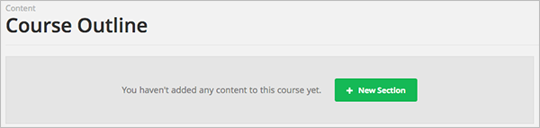4.2.2. 举例说明如何在课程大纲中搭建课程¶
下图介绍了课程大纲中一门课程的构成要素，包括章节、小节及单元。 当您创建好一门课程后，它就会显示成这个样子：
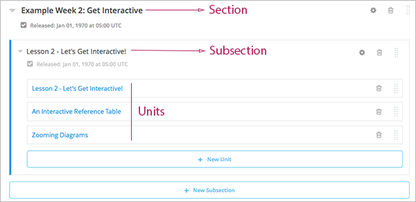如上图所示，这门课程包括以下三个部分：
Components 不会显示在课程大纲中。但是，您可以通过点击包含这些组件的单元添加或者进入组件。
您可以查看上面的链接了解有关课程要素的信息。本章的剩余部分将阐述更多有关课程大纲的信息。

4.2.5. 在课程大纲中添加内容¶
您可以直接在大纲中添加章节、小节及单元。
点击大纲页面上方或者下方的 新建章节 按钮新建章节。
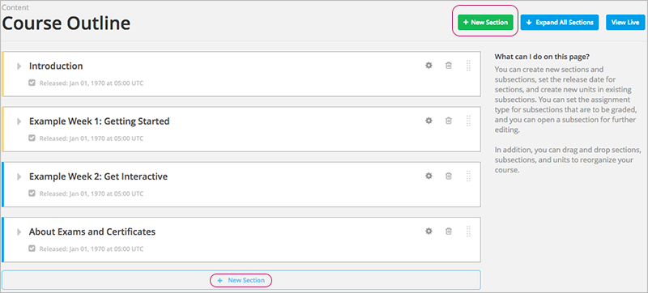在章节后面添加小节，先扩展该章，然后点击 新建小节 按钮。
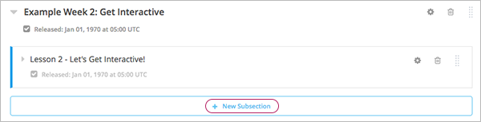在小节后面添加单元，先扩展该小节，然后点击 新建单元 按钮。
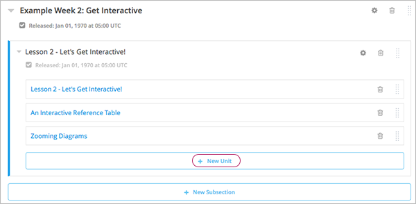打开 unit 页面。
4.2.6. 在课程大纲中更改内容设置¶
您可以在课程大纲中更改章节、小节及单元的设置，包括：
点击“设置”按钮更改更改章节、小节及单元的设置。如下图圆圈标记所示：
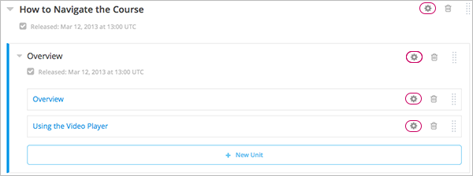详细信息请点击上文中的链接。
4.2.7. 在课程大纲中发布内容¶
您可以发布整个章节、小节中的新单元或者修改后的单元，也可以单独发布单元。
点击章节、小节中的“发布”按钮发布新单元或者修改后的单元内容。如下图圆圈标记所示：
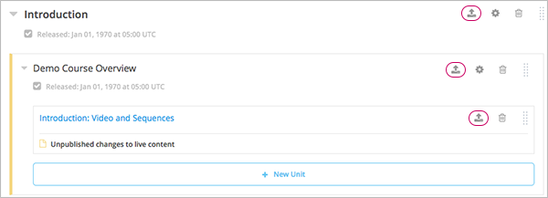Note
只有在课程内容发生改变时“发布”按钮才会显现。
详细信息请参见以下内容：
4.2.8. 重新整理课程大纲¶
在大纲页面中，您可以通过移动章节、小节及单元的位置重组课程大纲。
要移动某个元素时，只需将鼠标悬停在屏幕右侧的元素句柄上直至鼠标指针变成四方向箭头，如下图所示：已选中“第一课——入门指南”：
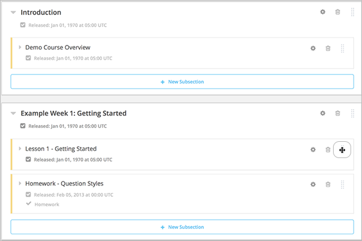然后，将鼠标选中并拖动需要移动的部分。
如果您扩展了目标章节，那么，当你在移动大纲中的某一要素时，会出现一条蓝色的直线告知您松开鼠标后该要素会出现在的地方。 如下图所示，“第一课——入门指南”会移至到“介绍”后。
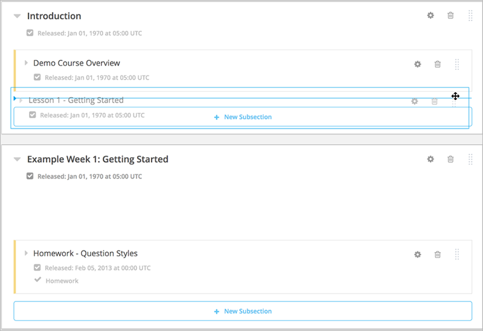如果您没有扩展目标章节，那么移动要素至有效的位置时，目标章节会出现蓝色的边框，这时您可以松开鼠标。 如下图所示，“第一课——入门指南”会移至到收起的章节“介绍”后。
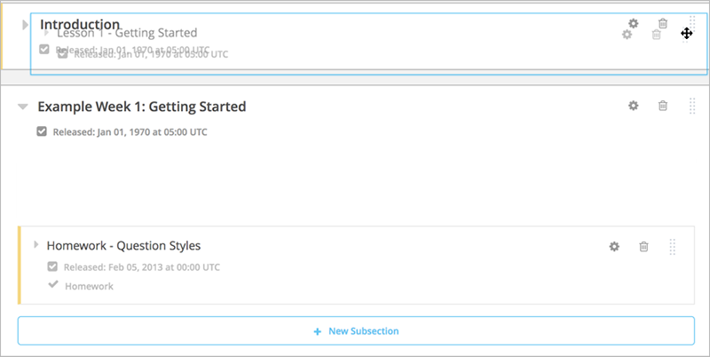4.2.9. 在课程大纲中删除内容¶
您可以在课程大纲中删除章节、小节及单元。
Warning
删除的内容无法恢复。为避免删除有用到的内容，我们建议您将目前不需要的内容移到某一章节中然后设置成不发布的状态。
点击“删除”按钮删除不需要的内容。
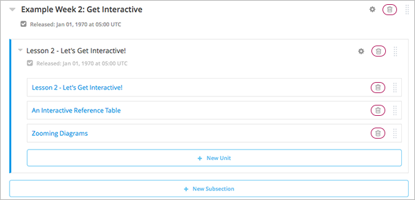之后会弹出对话框让您确认删除。
Note
确认“删除”将删掉该要素中包含的所有内容。例如，您删除某一小节的内容，那么该小节中的所有单元也会随之删除。